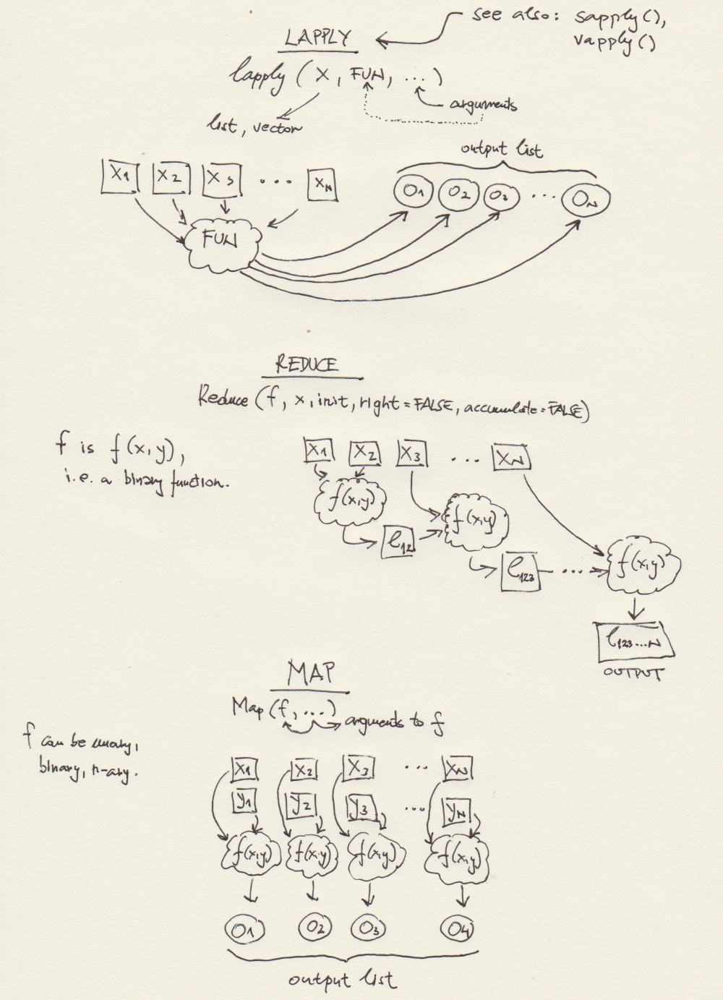

Session03 Functional programming + Control flow in R
Goran S. Milovanovic, PhD

Functional programming + Control flow in R
What do we want to do today?
We study a practical problem of dealing with many dataframes with
identical (or nearly identical) columns: that would be similar to a set
of tables with identical schemata in the world of Relational
Database Management Systems (RDBMS). In the near future we will
start drawing parallels between working with dataframes in R and the
relationally structured tables in RDBMS like MySQL, MariaDB, PostgreSQL, and similar. While
learning how to manage a set of dataframes we start introducing the R
control flow: various iterations like for,
repeat, and while loops, and decision making with
if … else and switch. Of course, we recognize the
nature of R as a functional and vectorized programming language, so we
immediately show how to avoid using a loop when lapply() or
any of its sisters - like Reduce() that we will introduce
in this session - can do the job. We want our code to be a series of
mappings from input data through various transformations onto the
results, and consider everything else to be what is called a glue
code. We will later show how {dplyr}, {tidyr}, and other packages
are perfectly suited for that purpose.
0. Prerequisits.
- Create a directory named
_datain the directory where you want to store your R code for this session. - In your
_datadirectory, create a new directory:_listings - Go to the Inside
Airbnb page and download the following
.csvfiles:listings_amsterdam.csvcsvfile (under the Amsterdam, North Holland, The Netherlands section);listings_antwerp.csvcsvfile (under the Antwerp, Flemish Region, Belgium section);listings_asheville.csvcsvfile (under the Asheville, North Carolina, United States section);listings_athens.csvcsvfile (under the Athens, Attica, Greece section).
- Rename the files in the order of their download in the following
way: (1)
listings_amsterdam.csv, (2)listings_antwerp.csv, (3)listings_asheville.csv, and (4)listings_athens.csv. Remember: all files should reside in your_data/_listings/directory.
1. Read several dataframes and then compose one large dataframe:
for loops, lapply(), and
Reduce()
All the listings_*.csv files should be found in your
_data directory for this session:
dataDir <- paste0(getwd(), "/_data/_listings/")
list.files(dataDir)## [1] "listings_amsterdam.csv" "listings_antwerp.csv" "listings_asheville.csv"
## [4] "listings_athens.csv"Good. There is highly typical situation in Data Science in which some data collection systems have a regular data production update: for example, the datasets encompassing some observations that need to be analyzed are produced every hour on a company server, but the analysis and reporting need to take place only once a day. That means that every time a Data Scientist needs to analyze the new observations - most probably by relying on a highly automated data processing, modeling, and visualization pipeline that they have carefully designed and tested - they need to load 24 (i.e. one per hour) datasets for processing. In this example we are assuming that all such datasets have the same structure, and that means: the column names and the respective data types are always the same (we will see how to deal with the violations of this assumption later).
The first approach to acquire multiple tabular data at once in R is
to use iterations. In R, we have the for loop, the
repeat loop, and the while loop at our
disposal. Let’s start with the for loop - probably the most
common one.
# - how many files to read from /_data
num_files <- length(list.files(dataDir))
num_files## [1] 4So there are currently {r num_files} .csv
files there. Ok:
1.1 The for loop
# - list files
files <- list.files(dataDir)
# - how many files there are:
num_files <- length(list.files(dataDir))
# - prepare a list to store the dataframes
dataSet <- list()
# - load all datasets, one by one, in a for loop:
for (index in 1:num_files) {
dataSet[[index]] <- read.csv(paste0(dataDir, files[index]),
header = TRUE,
check.names = FALSE,
stringsAsFactors = FALSE)
}The dataSet variable is now a list with four elements,
each of them encompassing one dataframe: the result of a
read.csv call over files[1],
files[2], files[3], and files[4].
We will get back to our data soon. Let’s discuss the for
loop in R first: it is simple.
The (i in 1:num_files) part of the for loop
syntax tells R that i needs to take values from
c(1,2,3,4) exactly in that order, because:
1:num_files## [1] 1 2 3 4We use the index variable in the for loop
to single out exactly what file name from the files vector
do we need in each iteration: that is the
paste0(dataDir, files[i] part that presents the first
argument to read.csv(). What is found between
{ and } is a code block: that
is what will be executed in each iteration of the for loop,
all the way until i == num_files is TRUE.
In effect, R has started from index = 1 and increased
index until it reached the value of num_files,
each time executing what is found in the code block following the
definition of the for loop, and using index as
a parameter to alter what read.csv() will do. In each
iteration, index was also used to index an element of the
dataSet list: dataSet[[i]]. Finally,
dataSet became a list with four elements, each being a
dataframe holding one dataset from our _data directory.
For loops are really simple:
for (a in 1:10) print(a)## [1] 1
## [1] 2
## [1] 3
## [1] 4
## [1] 5
## [1] 6
## [1] 7
## [1] 8
## [1] 9
## [1] 10names <- c('Maria', 'Ann', 'Peter', 'Jovan', 'Ilke')
for (x in 1:length(names)) {
print(
paste0("This is a beatiful name: ",
names[x])
)
}## [1] "This is a beatiful name: Maria"
## [1] "This is a beatiful name: Ann"
## [1] "This is a beatiful name: Peter"
## [1] "This is a beatiful name: Jovan"
## [1] "This is a beatiful name: Ilke"Do you remember lapply()?
1.2 The for loop vs. lapply() and when are
the for loops inefficient in R
files <- list.files(dataDir)
dataSet <- lapply(paste0(dataDir, files),
read.csv,
header = TRUE, stringsAsFactors = FALSE)Yes, we need for loops here and there, but this
^^ is the R way of doing things:
filesis a vector encompassing the filenames of the.csvdatasets that we needlapply()is an R function that applies a given function -read.csv()- to all elements of the list or a vector given as its first argument (paste0(dataDir, files)in this example)- each function’s call result will be assigned to an output list - the
result of a
lapply()call - and the output is finally assigned to
dataSet.
There is a myth saying that for loops in R are slow.
Well, they can be. But using lapply() in a functional
programming language like R is not just a matter of efficiency: look how
code with lapply() is elegant and concise in comparison to
iterations like the for loop!
When not to use the for loop in R (if
you ask me: never, if you don’t have to)?
The typical context that slows down R code execution is the one in which a data structure will grow inside the loop:
numbers <- numeric()
for (i in 1:100) {
numbers[i] <- i
}First, there is absolutely no need to do such things in a vectorized language like R:
numbers <- 1:100is enough, of course. The more important thing is that growing data
structures in loops slows down the code execution and significantly in
some situations (when the data structure is really large, for example).
How can we use a more efficient for loop if we have to grow
a data structure in it? Tell R how much memory is needed to hold the
respective data structure:
# - list files
files <- list.files(dataDir)
# - how many files?
num_files <- length(list.files(dataDir))
# - prepare a list to store the dataframes
dataSet <- vector(mode = "list", length = num_files)
# - iterate:
for (i in 1:num_files) {
dataSet[[i]] <- read.csv(paste0(dataDir, files[i]),
header = T,
stringsAsFactors = F)
}We have used vector(mode = "list", length = num_files)
to create an empty list of length num_files:
emptyList <- vector(mode = "list", length = 4)
emptyList## [[1]]
## NULL
##
## [[2]]
## NULL
##
## [[3]]
## NULL
##
## [[4]]
## NULLAnd NULL means this does not exist in R,
different from NA in vectors and dataframes which means: we
expect and element in this place but we do not observe one.
1.3 Compose one dataframe from several dataframes stored in a list:
Reduce()
We know that dataSet has four elements and that each of
them is an data.frame:
lapply(dataSet, class)## [[1]]
## [1] "data.frame"
##
## [[2]]
## [1] "data.frame"
##
## [[3]]
## [1] "data.frame"
##
## [[4]]
## [1] "data.frame"Now, say that the analyst needs to put all these dataframes together in a single dataframe for the purposes of statistical modeling. Take a look at the following code first and than we will discuss it in detail:
listings <- Reduce(rbind, dataSet)
dim(listings)## [1] 29629 18Do the four datasets have 29629 rows in total?
sum(sapply(dataSet, function(x) dim(x)[1]))## [1] 29629Yes, they do: listings is now the dataframe that we
need. But what was that Reduce() thing?
“Reduce() takes a function f of two arguments and a list or vector x which is to be ‘reduced’ using f. The function is first called on the first two components of x, then with the result of that as the first argument and the third component of x as the second argument, then again with the result of the second step as first argument and the fourth component of x as the second argument etc. The process is continued until all elements of x have been processed.” - From R: Reduce() – apply’s lesser known brother, the Data Science made in Switzerland blog.
Let’ see:
numbers <- c(1, 2, 3, 4)
Reduce('^', numbers)## [1] 1Of course, because: 1^2 = 1, 1^3 = 1,
1^4 = 1, but it does work that way, I
assure you:
numbers <- c(4, 3, 2, 1)
Reduce("^", numbers)## [1] 4096because 4^3 = 64, 64^2 = 4096, and
4096^1 = 4096.
If you are interested to see the intermediate results of
Reduce(), set its accumulate argument to
TRUE:
numbers <- c(4, 3, 2, 1)
Reduce("^", numbers, accumulate = T)## [1] 4 64 4096 4096So what happened in our
listings <- Reduce(rbind, dataSet) call is the
following: (a) dataSet is a list of four dataframes, (b)
rbind is a function that takes two arguments, both
dataframes, and puts them on top of each other (mind the column names!),
so (c) Reduce() began by binding the first two elements of
dataSet together, then used the resulting dataframe as its
next input together with the third element of dataSet, and
finally used that resulting dataframe as its first argument together
with the fourth element of dataSet as its second argument
to produce the listings.
Note. You have noticed that I have used the
^ operator in R as if it were a function in
Reduce('^', numbers). That is because it is a function in
R, look:
'^'(2, 3)## [1] 8Similarly,
'+'(2, 3)## [1] 5That is why we call it a functional programming language - and a beautiful one indeed.
1.4 A concise overview of some R functions used in functional programming
Here is a schematic overview of some R functions that are typically
used in functional programming. The one at the bottom -
Map(f, ...) - we have not used yet. But we will, at some
point, and it is also pretty intuitive, e.g. for two lists,
x, y, and a binary function
f(x,y), Map(f, x, y) returns
f(x[[1]], y[[1]]), f(x[[2]], y[[2]]), .., f(x[[n]], y[[n]]).
Map() can use n-ary functions, i.e. f can have
as many arguments as needed.

1.5 Enter a new column into each dataframe and compose:
strsplit() and gsub()
Finally, there is one problem with listings: we do have
all the data in one place, but we do not know from which original
dataset (Amsterdam, Antwerp, Asheville, Athens) do the data come from.
Let’s fix this. Remember that we have the filenames in
files:
files## [1] "listings_amsterdam.csv" "listings_antwerp.csv" "listings_asheville.csv"
## [4] "listings_athens.csv"What happens if…
strsplit(files[1], split = "_")## [[1]]
## [1] "listings" "amsterdam.csv"Ok, so strsplit() takes a string (files[1])
in this example) and splits it up where it finds the character provided
in its split argument (and that would be "_"
in this example) - and returns a list.
Ok, and what happens if…
gsub(".csv",
"",
strsplit(files[1], split = "_")[[1]],
fixed = TRUE)## [1] "listings" "amsterdam"gsub() - a relative of grepl() will
substitute its first argument by its second argument in a given
string:
gsub("A", "E", "Amelia")## [1] "Emelia"So
gsub(".csv", "", strsplit(files[1], split = "_")[[1]], fixed = T)## [1] "listings" "amsterdam"will first strsplit the files[1] string by
“_“, and we use [[1]] in order to grab the result because it returns a
list; gsub() then replaces ".csv" with an
empty string "", and we need to specify
fixed = T to inform gsub() that we do not wish
the . to be interpreted as regex (where it
means: any character) but literally as a .
character. The remaining thing to do is to pick up the city which is
found in the second position of the output vector:
gsub(".csv", "", strsplit(files[1], split = "_")[[1]], fixed = T)[2]## [1] "amsterdam"And we could have accomplished the same by:
gsub(".csv", "", strsplit(files[1], split = "_")[[1]][2], fixed = T)## [1] "amsterdam"because strsplit returns a list of length two
([[1]] 'listings' 'amsterdam.csv' in this example).
So here is how we get to the cities that we need for our datasets:
cities <- sapply(files, function(x) {
gsub(".csv", "", strsplit(x, split = "_")[[1]][2], fixed = T)
})
cities## listings_amsterdam.csv listings_antwerp.csv listings_asheville.csv listings_athens.csv
## "amsterdam" "antwerp" "asheville" "athens"It is named vector, with names returned from the
sapply() call. We can unname() that:
cities <- unname(cities)
cities## [1] "amsterdam" "antwerp" "asheville" "athens"Now, we need to produce listings with a new column:
listings$city. How do we accomplish that?
for (i in 1:length(cities)) {
dataSet[[i]]$city <- cities[i]
}
listings <- Reduce(rbind, dataSet)
table(listings$city)##
## amsterdam antwerp asheville athens
## 9659 2803 3030 14137And now we can answer questions like: what is the average price per AirBnB listing per city, and similar:
library(dplyr)
listings %>%
dplyr::select(city, price) %>%
dplyr::group_by(city) %>%
dplyr::summarise(mean_price = mean(price))## # A tibble: 4 × 2
## city mean_price
## <chr> <dbl>
## 1 amsterdam NA
## 2 antwerp NA
## 3 asheville NA
## 4 athens NAOoops, what is {dplyr}? That comes later. What if I
wanted to do this in base R?
city <- unique(listings$city)
mean_price <- unname(sapply(city, function(x) {
w <- which(listings$city == x)
return(
mean(listings$price[w], na.rm = TRUE)
)
}))
data.frame(city, mean_price)## city mean_price
## 1 amsterdam 289.6391
## 2 antwerp 119.5503
## 3 asheville 177.4988
## 4 athens 105.7959But the beauty of {dplyr}! You will see..!
2 Beyond for: while and
repeat loops, next and break
As many other programming languages, R makes use of
while loops and repeat loops as well. Let’s
see how do they differ from the for loop by means of very
simple examples only:
counter <- 0
while (counter <= 100) {
counter <- counter + 1
if (counter %% 10 == 0) {
print(counter)
}
}## [1] 10
## [1] 20
## [1] 30
## [1] 40
## [1] 50
## [1] 60
## [1] 70
## [1] 80
## [1] 90
## [1] 100In the while loop, we begin by checking if the loop
exit condition is satisfied before executing the code
block in an iteration. We began by setting counter to zero;
then we ask if it is less or equal than 100, and if that
condition is true we execute the code block, increase the value of
counter only inside the block.
We have also used our first if in R:
if (counter %% 10 == 0) {
print(counter)
}And this expression does not print anything because
counter has already reached 101 in the
while loop (why?), while the condition
counter %% 10 == specifies that only if the remainder after
dividing counter with 10 is equal to zero.
The repeat loop, to the contrary, begins by executing
what is in its code block and stops only if a certain condition in the
block is satisfied:
counter <- 0
repeat {
# - increase counter by 1
counter <- counter + 1
# - ask if the remainder of counter/10 is 0
if (counter %% 10 == 0) {
# - print counter
print(counter)
}
# - exit condition:
if (counter > 100) {
break
}
}## [1] 10
## [1] 20
## [1] 30
## [1] 40
## [1] 50
## [1] 60
## [1] 70
## [1] 80
## [1] 90
## [1] 100Remember: you have to break the
repeat loop in R somehow: specify a condition, and if the
condition is satisfied, end the loop execution by break!
Unless you are able to break it will run FOREVER and inflate the
Universe with computing!
We can also use break in a for loop to exit
altogether:
for (counter in 1:100) {
# - if statement
if (counter %% 10 == 0) {
print(counter)
}
# - exit condition
if (counter > 50) {
break
}
}## [1] 10
## [1] 20
## [1] 30
## [1] 40
## [1] 50The loop would iterate until counter reaches
100, as specified in for (counter in 1:100),
but we have introduced an exit condition by
if (counter > 50) {break} so it did not.
Finally, there is next, telling the loop to abandon the
execution of the current iteration and start the next one if some
condition is satisfied:
for (counter in 1:100) {
if (!(counter %% 10 == 0)) {
next
} else {
print(counter)
}
print("Remainder is zero!")
}## [1] 10
## [1] "Remainder is zero!"
## [1] 20
## [1] "Remainder is zero!"
## [1] 30
## [1] "Remainder is zero!"
## [1] 40
## [1] "Remainder is zero!"
## [1] 50
## [1] "Remainder is zero!"
## [1] 60
## [1] "Remainder is zero!"
## [1] 70
## [1] "Remainder is zero!"
## [1] 80
## [1] "Remainder is zero!"
## [1] 90
## [1] "Remainder is zero!"
## [1] 100
## [1] "Remainder is zero!"The result is similar to what we have seen before, but the code is
modified. The ! unary operator in R is negation,
so (!(counter %% 10 == 0)) means: the remainder of division
by ten of counter is not equal to zero. And if that is so,
we want to skip the current iteration (and that is why
print("Remainder is zero!") does not execute) and start the
next one. Of course, break and next can be
combined in a single loop.
Also, we have used to if ... else syntax to make a
decision in R. We will next discuss decisions in control flow more
closely.
3 Decisions: if...else, switch(), and
ifelse()
3.1 if...else is simple
The usage of if ... else in R is really simple. Let’s
begin with:
num_rows <- dim(listings)[1]
if (num_rows >= 10000) {
print("Listings have more than 10,000 rows!")
} else {
print("Listings is a very small dataset.")
}## [1] "Listings have more than 10,000 rows!"The if ... else constructs can be nested:
num_rows <- dim(listings)[1]
num_cols <- dim(listings)[2]
if (num_rows >= 10000) {
print("Listings have more than 10,000 rows!")
if (num_cols > 10) {
print("And it has more than ten columns!")
} else {
print("But it has less than ten columns!")
}
} else {
print("Listings is a very small dataset.")
if (num_cols > 10) {
print("And it has more than ten columns!")
} else {
print("But it has less than ten columns!")
}
}## [1] "Listings have more than 10,000 rows!"
## [1] "And it has more than ten columns!"And we can chain if ... else indefinitely:
this_number <- 5
if (this_number > 10) {
print("This number is greater than ten...")
} else if (this_number < 5) {
print("This number is less than five.")
}Nothing happens, of course, because this_number is
exactly five. However,
this_number <- 5
if (this_number > 10) {
print("This number is greater than ten...")
} else if (this_number <= 5) {
print("This number is less or equal to five.")
}## [1] "This number is less or equal to five."3.2 switch() for multiple checks +
ifelse() for binary decisions
Is this_animal a dog, an elephant, a cat, or a
tiger?
this_animal <- 'tiger'
switch(this_animal,
"dog" = "It's a dog!",
"elephant" = "It's an elephant!",
"cat" = "Meow!",
"tiger" = "A tiger? In Africa?")## [1] "A tiger? In Africa?"Let’s analyze how this works. First, this_animal was set
to 'tiger'. Then it was used as an expression in
switch() which searches through the list of provided
alternatives and returns the result from the match. In this case, a
match between this_animal and "tiger"
determined that the response should be
"A tiger? In Africa?"
Let’s invoke a "Meow! response from a
"cat":
this_animal <- 'cat'
switch(this_animal,
dog = "It's a dog!",
elephant = "It's an elephant!",
cat = "Meow!",
tiger = "A tiger? In Africa?")## [1] "Meow!"And let’s try with some numbers:
this_number <- 1
switch(this_number,
"It's the first one!",
"It's the second one!",
"It's the third one one!",
"It's the fourth one!")## [1] "It's the first one!"this_number <- 4
switch(this_number,
"It's the first one!",
"It's the second one!",
"It's the third one one!",
"It's the fourth one!")## [1] "It's the fourth one!"You can use code blocks in switch(), of course:
some_expression = 'hey'
switch(some_expression,
hey = {
print(2 + 2)
print('Hey!')
},
hi = {
print(5 + 5)
print('Hi!')
},
{
print(6 * 3)
print('Default case!')
}
)## [1] 4
## [1] "Hey!"The default case is triggered if switch() cannot find a
match:
some_expression = 'Ciao'
switch(some_expression,
hey = {
print(2 + 2)
print('Hey!')
},
hi = {
print(5 + 5)
print('Hi!')
},
{
print(6 * 3)
print('Default case!')
}
)## [1] 18
## [1] "Default case!"A practical application of switch()? Let’s check if all
dataframes in dataSet have the same column names and report
accordingly:
columns <- lapply(dataSet, colnames)
columns## [[1]]
## [1] "id" "name"
## [3] "host_id" "host_name"
## [5] "neighbourhood_group" "neighbourhood"
## [7] "latitude" "longitude"
## [9] "room_type" "price"
## [11] "minimum_nights" "number_of_reviews"
## [13] "last_review" "reviews_per_month"
## [15] "calculated_host_listings_count" "availability_365"
## [17] "number_of_reviews_ltm" "license"
## [19] "city"
##
## [[2]]
## [1] "id" "name"
## [3] "host_id" "host_name"
## [5] "neighbourhood_group" "neighbourhood"
## [7] "latitude" "longitude"
## [9] "room_type" "price"
## [11] "minimum_nights" "number_of_reviews"
## [13] "last_review" "reviews_per_month"
## [15] "calculated_host_listings_count" "availability_365"
## [17] "number_of_reviews_ltm" "license"
## [19] "city"
##
## [[3]]
## [1] "id" "name"
## [3] "host_id" "host_name"
## [5] "neighbourhood_group" "neighbourhood"
## [7] "latitude" "longitude"
## [9] "room_type" "price"
## [11] "minimum_nights" "number_of_reviews"
## [13] "last_review" "reviews_per_month"
## [15] "calculated_host_listings_count" "availability_365"
## [17] "number_of_reviews_ltm" "license"
## [19] "city"
##
## [[4]]
## [1] "id" "name"
## [3] "host_id" "host_name"
## [5] "neighbourhood_group" "neighbourhood"
## [7] "latitude" "longitude"
## [9] "room_type" "price"
## [11] "minimum_nights" "number_of_reviews"
## [13] "last_review" "reviews_per_month"
## [15] "calculated_host_listings_count" "availability_365"
## [17] "number_of_reviews_ltm" "license"
## [19] "city"Learn about identical():
identical(columns[[1]], columns[[2]])## [1] TRUEAre all pairs in columns identical? Learn about
combn():
combn(1:4, m = 2)## [,1] [,2] [,3] [,4] [,5] [,6]
## [1,] 1 1 1 2 2 3
## [2,] 2 3 4 3 4 4Let’s coordinate now:
search <- combn(1:length(columns), 2)
apply(search, 2, function(x) {
identical(columns[x[1]], columns[x[2]])
}
)## [1] TRUE TRUE TRUE TRUE TRUE TRUEThis was our first usage of apply(): take a matrix like
search, apply(X, MARGIN,
FUN) where we apply FUN across rows with
MARGIN = 1 and across columns with MARGIN = 2.
To obtain row sums, for example:
apply(search, 1, sum)## [1] 10 20And to obtain sums across the columns:
apply(search, 2, sum)## [1] 3 4 5 5 6 7And of course R has functions for this: rowSums() and
colSums() - you can try them out if you wish.
So, let’s report if all of the column names of the dataframes in
dataSet are identical:
columns <- lapply(dataSet, colnames)
search <- combn(1:length(columns), 2)
check <- apply(search, 2, function(x) {
identical(columns[x[1]], columns[x[2]])
})
num_pairs <- dim(search)[2]
dataFramesCheck <- ifelse(num_pairs == sum(check), 1, 2)
switch(dataFramesCheck,
"All dataframes have the same columns; you can proceed with code execution.",
"Inconsistent column names; try using datatable::rbindlist() with fill = T.")## [1] "All dataframes have the same columns; you can proceed with code execution."NOTE. the ifelse() function in R is
new. It is a vectorized function that first checks for the condition in
its first argument (which needs to evaluate to TRUE or
FALSE), and then if TRUE executes the
expression found in its second argument, and otherwise executes what is
found in its third argument:
ifelse(10 < 5,
"I do not understand basic arithmetics.",
"Ok I got at least that one right."
)## [1] "Ok I got at least that one right."NOTE. Obviously, we could have used just
ifelse() for this task:
columns <- lapply(dataSet, colnames)
search <- combn(1:length(columns), 2)
check <- apply(search, 2, function(x) {
identical(columns[x[1]], columns[x[2]])
})
num_pairs <- dim(search)[2]
ifelse(num_pairs == sum(check),
"All dataframes have the same columns; you can proceed with code execution.",
"Inconsistent column names; try using datatable::rbindlist() with fill = T.")## [1] "All dataframes have the same columns; you can proceed with code execution."SUMMARY. We have learned about the basics of R
programming in this session. The focus was twofold: (a) we have learned
about the control flow, which is similar in R and in almost any other
programming language: for, while,
repeat loops, and decision making with
if ... else, switch(), and
ifelse(); on the other hand, we have touched upon
functional programming in R with apply(),
lapply(), sapply(), Reduce(). Do
not forget: we really love functional programming in R. It makes the
code more consistent and elegant, if anything. Functional programming is
perfectly suited for Data Science projects because it allows us to
formulate and solve the problem as a chain of functional transformations
across the input data. An ideal Data Science code - not something that
can be always achieved - is nothing more than that.
Further Readings
Highly Recommended To Do
Important sources, documentation, etc.
- Quick-R - An excellent set of concise R tutorials.
- CRAN: The Comprehensive R Archive Network - This is were the official versions of R packages live
- Colors in R (PDF)
- ggplot2 Reference
- RDocumentation: Search all 21,217 CRAN, Bioconductor and GitHub packages
R Markdown
R Markdown is what I have used to produce this beautiful Notebook. We will learn more about it near the end of the course, but if you already feel ready to dive deep, here’s a book: R Markdown: The Definitive Guide, Yihui Xie, J. J. Allaire, Garrett Grolemunds.
Exercises
E1. In the beginning of this session we have used the
forloop to load four datasets into a list of dataframes in R. Do the same, but use therepeatloop instead.E2. Same as E1 but use the
whileloop in place ofrepeat.E3. Produce a new column of logicals (
TRUE,FALSE),listings$priceClassinlistingsthat isTRUEiflistings$priceis above or equal to its median, andFALSEif it is strictly lower than its median. Hint: Useifelseto create the new column. Try to summarize your data by usingsummary()onlistings$price. What doessummary(listings)look like?E4. Produce a new column in
listings:listings$priceNightsRation, which is the ratio oflistings$minimum_nightsandlistings$price.E5. Take a look at the following R code:
set <- 1:100
for (i in 1:length(set)) {
if(i == 100) {
break
} else {
if ((i == 1)) {
z = set[i] + set[i+1]
print(z)
} else {
z = z + set[i+1]
print(z)
}
}
}Use Reduce() to accomplish the same in a one-liner.
Remember the accumulate argument!
Goran S. Milovanović
DataKolektiv, 2020/21
contact: goran.milovanovic@datakolektiv.com

License: GPLv3 This Notebook is free software: you can redistribute it and/or modify it under the terms of the GNU General Public License as published by the Free Software Foundation, either version 3 of the License, or (at your option) any later version. This Notebook is distributed in the hope that it will be useful, but WITHOUT ANY WARRANTY; without even the implied warranty of MERCHANTABILITY or FITNESS FOR A PARTICULAR PURPOSE. See the GNU General Public License for more details. You should have received a copy of the GNU General Public License along with this Notebook. If not, see http://www.gnu.org/licenses/.

Contact: goran.milovanovic@datakolektiv.com

Impressum
Data Kolektiv, 2004, Belgrade.